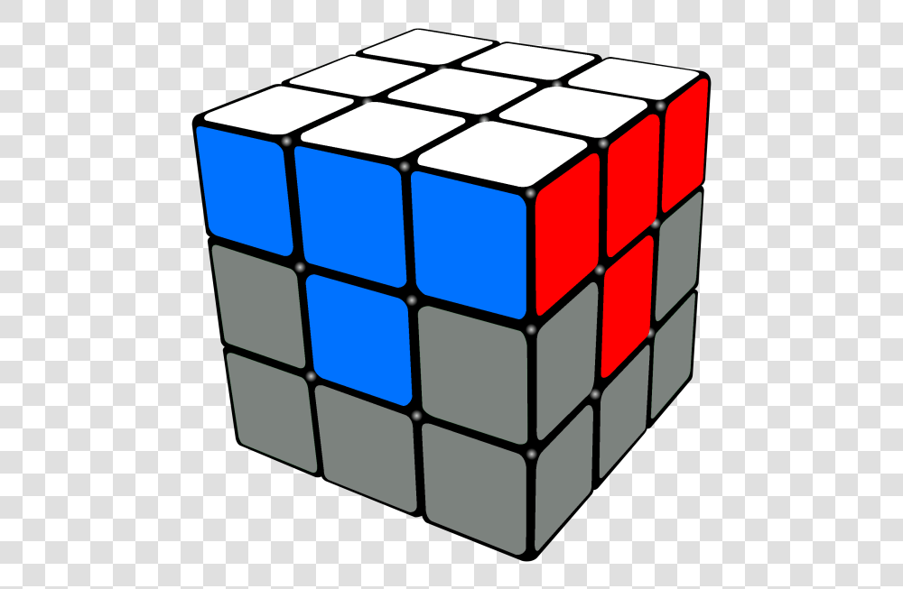

The next step is to solve the white corners, to finish the first layer.
This would look something like this. You see here we now have the entire white side but also just as importantly we have the entire layer, meaning that the sides are all perfectly solved. And they're still matching with the corresponding centre. So the first step of this is to pick any white corner on the top layer. Now we look at the other two colours of this corner. For example, it could be red and green. Next, what we're going to do is do U-layer turns until we match with the red and green centre. What you're going to do is hold this cube so that the piece that you want to put on the white side is facing on the right side with the white side on the bottom. Then, you're going to do this very simple algorithm. The algorithm is right clockwise, so R, up clockwise, so U, right counterclockwise or anticlockwise, so R’ and U anti-clockwise, so U’. It might not be properly solved yet, but in that case you just have to do it again until it's properly solved. So R U R’ U’. Keep on doing this algorithm until the corner piece is properly solved. Your case may vary, maybe you need to do this algorithm twice, maybe you need to do it five times. You might have a different amount of times you need to do this algorithm, but the maximum amount of times you need to do it is five. So if it takes more than five times, you know you did something wrong. Sometimes it'll be less but it'll never be more than five. Repeat this process for all other white corners on the top layer.
It is possible that you have no more white corners in the top layer, yet the white layer is still not solved yet. You might think that it's solved, but actually some of them might not be solved. If the white side is not fully solved yet, then pick any white corner on the bottom layer that's not solved. What you have to do is the same thing that you did before, hold it on the right and do the same algorithm. R U R’ U’. Now you see you brought it to the top layer, now match it with your respective colour centres. Now do the same algorithm. Repeat this step from here. If your white layer is done, congrats! You completed step 2.